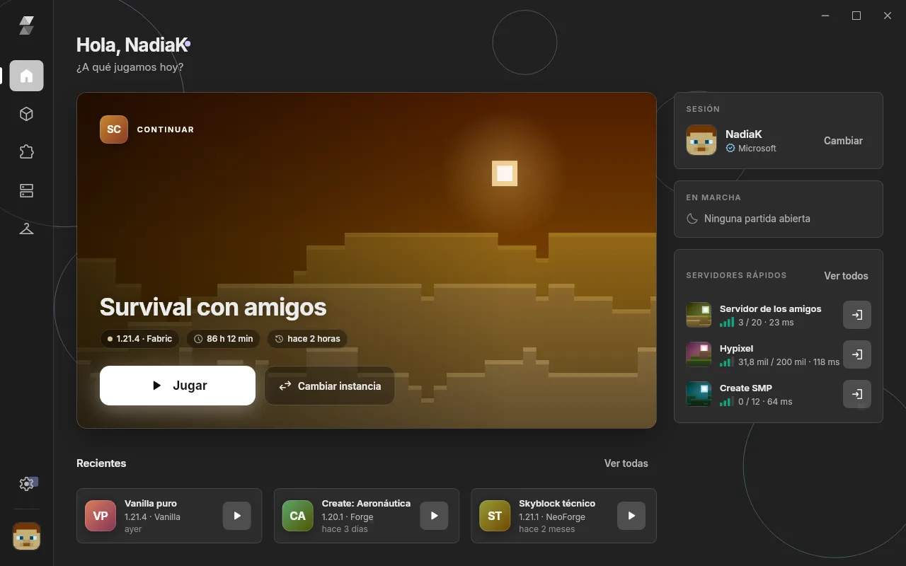
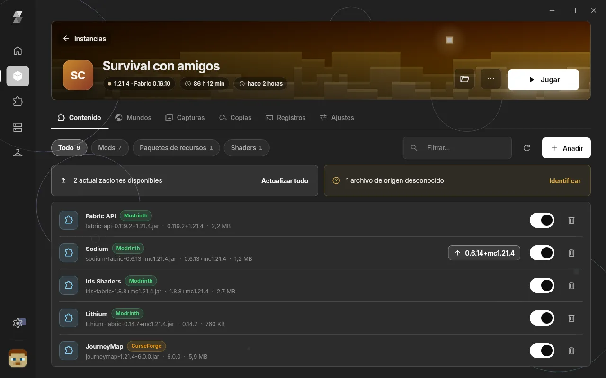
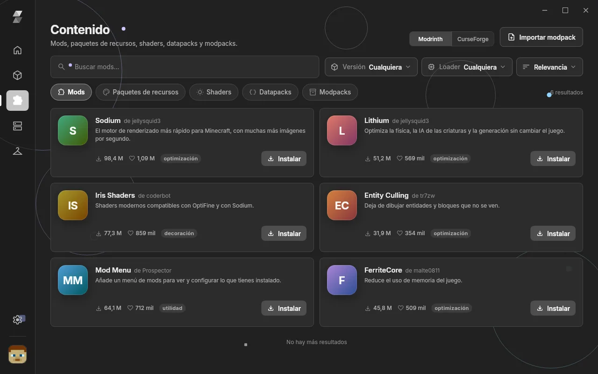
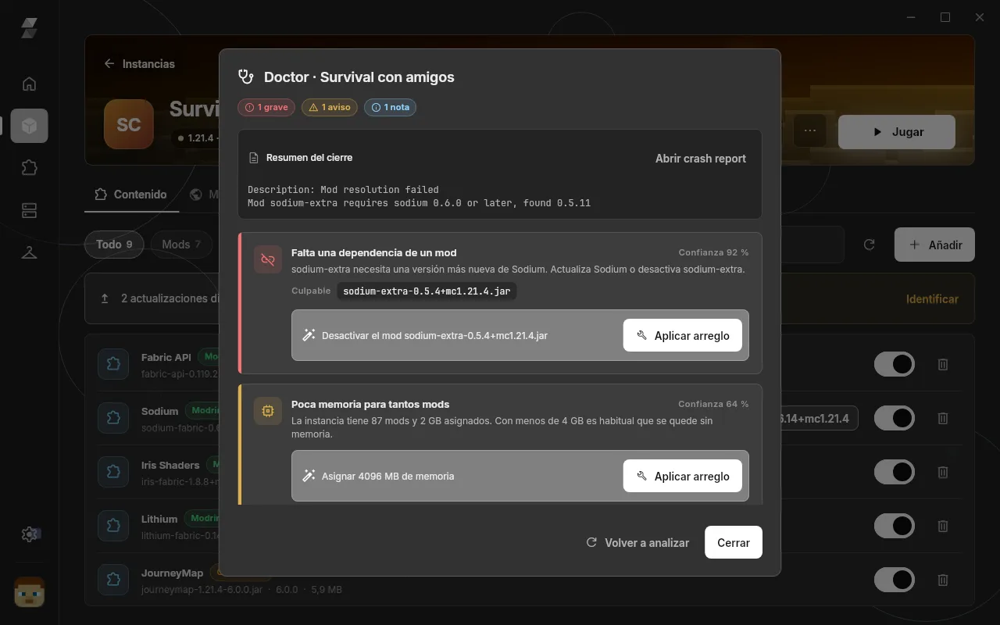

Tu Minecraft,
sin complicaciones.
Shard crea, instala y lanza tus instancias con sus mods y modpacks. Es rápido, gasta poco y cuida tus mundos.
Linux (AppImage, Flatpak, Arch) · Windows y macOS, próximamente

Todo lo que necesitas para jugar
Sin cuentas extra ni anuncios. Tus datos se quedan en tu equipo.
Instancias con cualquier loader
Vanilla, Fabric, Quilt, Forge y NeoForge. Shard descarga la versión de Java correcta por ti.
Mods y modpacks
Busca en Modrinth y CurseForge, instala con sus dependencias y actualiza todo de un clic.
Copias de seguridad
Copias automáticas o manuales de tus mundos o de la instancia entera, y restauración en segundos.
Doctor
Si el juego se cierra de golpe, Shard lee el informe, señala al culpable y propone el arreglo.
Mundos y servidores
Detalles de cada mundo, datapacks, capturas y una lista de servidores con su ping y jugadores.
Trae lo que ya tienes
Importa tus instancias de Roxy Launcher, Prism o .minecraft sin perder nada.
Skins y capas
Visor 3D de tu skin, sube una nueva desde un archivo o una URL y elige tu capa.
Rápido y ligero
Núcleo en Rust e interfaz nativa. Se esconde en la bandeja mientras juegas y no te roba memoria.
Cuatro estilos de serie
Cambia los colores, la forma y el fondo de toda la app. También puedes usar tu propia imagen.
Pensado para el día a día
Contenido de cada instancia, buscador de mods y diagnóstico de cierres.



Descargas
Versión 0.1.0 para Linux x86_64.
AppImage
21 MBFunciona en casi cualquier distribución. Dale permiso de ejecución y ábrela.
DescargarWindows y macOS
PróximamenteEl núcleo ya es multiplataforma; faltan las compilaciones.